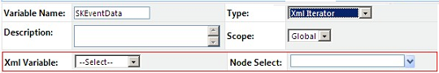

No
XML Iterator Variables allows you to define variables for repeating XML elements and attributes. This variable type represents a collection of XML nodes at any level in the XML Variable schema. It allows you to perform actions on XML nodes such as looping through XML nodes and deriving the value of a specific node at any location.
Note: The XML Iterator type option is available only if another variable of XML Document type exists
XML Variable of type 'XML Iterator':
When the variable type is changed to XML Iterator, following extra properties are displayed as seen in the image below.

Property Description:
'XML Iterator' XML Variable Property |
Description |
XML Variable |
All variables of type XML Document and XML Iterator are listed for selection. Select the parent XML Variable. The parent variable of an XML Iterator variable can be another XML Iterator Variable. |
Node Select |
Only nodes in the parent variable are displayed in this drop-down. Select the node that the variable represents. |
See Creating XML Variable of Type 'XML Iterator' for more information.